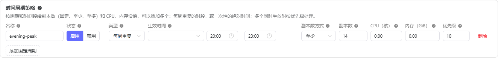
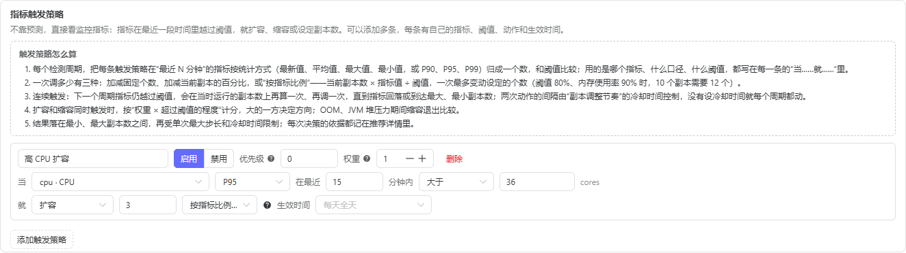

决策方式：五种，一次只用一种
在模块编辑页“模块策略”一组的第一节“决策方式”里选。它回答同一个问题：这个模块的副本数和资源由谁决定。
| 方式 | 怎么决定副本数和资源 | 适合 |
|---|---|---|
| 算法预测 | 用预测算法预测负载，按预测结果给出 CPU、内存和副本数。 | 负载有规律、想提前准备容量。 |
| 推荐模式 | 不预测，按固定公式和 P90、P95、P99、MAX 等实际使用量，算出单个 Pod 的 CPU、内存 Requests / Limits 和推荐副本数。 | 想要一个只依赖实际使用量、可以解释的推荐。 |
| 时间周期策略 | 按时间段设置副本数（固定、至少、至多）和 CPU、内存。 | 有明确的业务时段，如每天晚高峰。 |
| 指标触发策略 | 某个指标在一段时间内越过阈值，就扩容、缩容或设定副本数。 | 不依赖预测，直接对指标作出反应。 |
| 固定副本数策略 | 副本数一直是填写的数量，不自动扩缩容。 | 有状态服务等不允许自动改副本的工作负载。 |
算法预测和推荐模式是两套独立的计算：各自配置、各自计算、各自保存，不会混在一起。运行模式是另一件事：决策方式回答“怎么算”，运行模式回答“允许做什么”（见运行模式）。新建模块默认哪种方式都不启用，只采集数据，副本数和资源保持降级默认值。
互斥与优先级
- 三种策略（时间周期、指标触发、固定副本数）最多启用一种。
- 算法预测和推荐模式只能在三种策略全部禁用时启用，两者也不能同时启用。
- 三种策略的优先级高于算法预测和推荐模式：如果存储里同时有几种在启用（旧版本的数据），先执行策略，不执行预测和推荐。
表单里要换一种方式，先禁用正在启用的，再启用新的；其他方式的“启用”按钮会变灰，并写出要先禁用哪一种。平台保存模块、复制模块参数时按同样的规则检查，不符合的请求会被拒绝并说明原因。
从旧版本升级时只做一次整理：有启用的时间周期或指标触发的模块，对应策略的开关开启；同时有几种时固定副本数优先，其次时间周期，再次指标触发；有策略启用的模块，算法预测和推荐模式关闭；处于旁路的模块被停用（旁路已经取消，停用就是让模块什么都不做）。
每种方式只显示自己的参数
| 启用的方式 | 表单里出现的设置 |
|---|---|
| 算法预测 | 预测方式（动态、固定算法、不预测）、数据与预测周期、容量与副本、计算系数、最低评分。 |
| 推荐模式 | 计算系数（P90、P95、P99 的目标占比、余量、Limits 倍数、持续时间窗口）和资源保底封顶。 |
| 时间周期策略 | 时区、各时间段，以及副本调整节奏。 |
| 指标触发策略 | 时区、各条触发策略，以及副本调整节奏。 |
| 固定副本数策略 | 固定的副本数；没有副本调整节奏，因为副本数不动。 |
所有方式都有的设置：基本信息与运行模式、指标、副本边界（最小、最大副本数）、OOM 和 JVM 保护、降级默认值、节点池。边界对最终结果永远最后生效。
推荐模式
后台任务每 10 分钟（可在任务中心调整）读取模块实际的 CPU、内存使用量，取 P90、P95、P99 和最大值，按“计算系数”里的目标占比和余量算出单个 Pod 的 Requests，Limits 由使用量乘以倍数得出；全部 Pod 的总使用量除以单个 Pod 的 Requests 得到推荐副本数，以及比现在增加或减少多少。结果存进数据库，Operator 和准入直接读它，不需要有人打开资源大盘。数据不够时结果标为“不确定”，Operator 不会照它调整。
结果在“推荐与执行 > 资源推荐”里看，每个数字有依据；资源大盘也会在页面顶部列出最近一次后台计算。数据都来自 Prometheus，口径与资源大盘一致，见资源大盘。
固定副本数策略
启用后副本数一直是填写的数量，算法预测、推荐模式、指标触发、时间周期都不决定它；最小、最大副本数照样限制，所以填的数在边界之外时会被拉回边界并写明。填 0 不能启用。
时间周期策略
按时间段设置副本数：每周重复的（例如每天 20:00–03:00，结束早于开始就是跨午夜）或一次性的起止时间，按模块的时区计算。每个时间段的副本数有三种方式：
- 定值：这段时间就是这个数。
- 至少：当时运行的副本数低于这个数就抬到它。
- 至多：当时运行的副本数高于这个数就压到它。
CPU、内存填了就固定。没有时间段生效时副本数不变（保持当时运行的数量，不会回到降级默认值）。多个时间段同时生效：定值里优先级大的生效；至少取最大的，至多取最小的，至少高于至多时以至少为准。结果仍受最小、最大副本数约束。

指标触发策略
每条触发由下面几部分组成，可以添加多条：
| 字段 | 含义 |
|---|---|
| 名称、优先级 | 名称在模块内不重复；几条触发要求设定不同的副本数时，数字大的优先。 |
| 权重 | 扩容和缩容的触发同时命中时，每条按“权重 × 超过阈值的程度”计分（刚越过阈值算 1 倍，越过一倍以上算 2 倍），合计大的一方决定方向，相同按扩容。更相信哪个指标，就把它的权重调大。 |
| 指标 | 模块指标来源里的一个指标，或 JVM 堆占用率（堆已用 ÷ 堆上限）。阈值的单位与指标一致：指标是全副本的总和，阈值就是总和；指标是单 Pod，阈值就是单 Pod。 |
| 统计方式、时间窗口 | 最近 N 分钟（默认 15）内的最新值、平均值、最大值、最小值，或 P90、P95、P99。“平均值”就是这个窗口里所有采样点的算术平均；想让个别尖峰不起作用，用 P90、P95 或 P99。 |
| 比较与阈值 | 大于、大于等于、小于、小于等于。 |
| 动作与数量 | 扩容、缩容或设定为 N 个副本。扩容、缩容的数量有三种写法：加减固定的个数，加减当前副本的百分比，或“按指标比例”。 |
| 生效时间 | 星期几与每天的起止时间，按模块时区；不填为每天全天。 |
一次调多少，连续触发怎么办
- 固定个数、百分比：每次触发就加减这么多，例如“内存使用率超过 90% 就扩 1 个”。
- 按指标比例：当前副本数 × 指标值 ÷ 阈值，一次最多变动设定的个数。阈值 80、内存使用率 90、10 个副本，算出需要 12 个，数量填 1 时这次只加 1 个。这种写法让步子的大小跟着缺口走，要求阈值大于 0。
- 连续触发：下一个检测周期指标仍然越过阈值，会在当时运行的副本数上再算一次、再调一次，直到指标回落，或到达最大（最小）副本数；两次动作的间隔由“副本调整节奏”里的冷却时间控制，没有设冷却时间就每个周期都动。所以连续扩容的边界是三样：最大副本数、单次最大步长、冷却时间。
- 没有触发：副本数不变，保持当时运行的数量。
例：“全副本 CPU 在最近 15 分钟的 P95 大于 36 核，就按指标比例扩容，一次最多 3 个，每天 09:00–18:00 生效。”

几条触发同时命中时：设定副本数的取优先级最高的（同级取较大的）；扩容的取增量最大的，它不会被设定压低；缩容只在没有设定、没有 OOM 和 JVM 压力时才生效，多条缩容取减得最少的。扩容和缩容同时命中时按权重计分，合计大的一方决定方向，相同按扩容；OOM 和 JVM 堆压力的保护期间，缩容退出比较，扩容照常生效。每次决策的依据都记在推荐详情里。
配置建议
- 先用算法预测或推荐模式看一段时间，再决定要不要改成策略；改的时候先禁用正在启用的方式。
- 时间周期的“至少”值可参考资源大盘“常态与高负载时段”里的高峰小时和最忙副本数。
- 指标触发要用能反映压力的指标，并配冷却时间；想对尖峰不敏感，统计方式选 P95 而不是最大值。
- 同一个目标只能有一个副本控制者，不要与 HPA、KEDA 同时控制，见同一目标只有一个控制者。